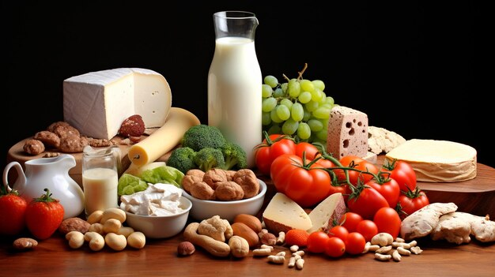

Vitamin D and Calcium
Calcium and Vitamin D help to build strong bones, help with portions of muscle movement and help nerves carry messages between brain and body. Vitamin D also helps boost the immune system.
- We get our calcium from foods that we eat. These foods can be dairy or nondairy forms of calcium.
- Calcium absorption is blocked by high phosphorous diets (large amounts of meat, soda), increased caffeine, cigarette smoking, low estrogen levels (adolescent girls), low Vitamin D levels.
- Although we can get some Vitamin D from fatty fish and fortified foods, most of our Vitamin D comes from sunlight..
- The sunlight has to be direct. This means that it cannot be sunlight through a window, cloudy or shady areas. Sunblock and darker skins also repel most of the sunlight..
| Age |
Daily Recommended Intake |
| 0-12 months |
400 IU |
| 1-3 years |
800 IU |
| 4-18 years |
1000-2000 IU |
| Age |
Fiber(grams) |
| Greater than 5 months |
200 mg |
| 6-11 months |
260 mg |
| 1-3 years |
700 mg |
| 4-8 years |
1000 mg |
| 9-18 years |
1300 mg |
Dietray Sources of Vitamin D

| Food |
International Units per Serving |
Food |
International Units per Serving |
| Cod Liver Oil (1 tbs) |
1360 IU |
Egg (yolk) (1 large) |
41 IU |
| Swordfish, cooked (3 oz) |
566 IU |
Cheddar Cheese (1.5 oz) |
10 IU |
| Salmon (sockeye), cooked (3 oz) |
447 IU |
Milk, vitamin D fortified (1 cup) |
115-124 IU |
| Tuna fish, canned in water, drained (3 oz) |
1360 IU |
Orange Juice, vitamin D fortified (1 cup) |
41 IU |
Dietary Sources of Calcium
| Food |
Milligrams per Serving |
Food |
Milligrams per Serving |
| Milk (8 oz) |
300 mg |
Almond butter (2 tbs) |
90 mg |
| Bok Choy (1 cup) |
150 mg |
Fish (3 oz) |
100-175 mg |
| Turnip Greens (1 cup) |
200 mg |
Yogurt (8 oz) |
400 mg |
| Cheese (1 oz) |
200 mg |
Navy Beans (1 cup) |
125 mg |
| Spinach (1/2 cup) |
120 mg |
Soy Beans (1 cup) |
175 mg |
| Almonds (1/4 cup) |
90 mg |
Navy Beans (1 cup) |
125 mg |
| Broccoli (1 cup) |
100-140 mg |
Ice Cream (8 oz) |
275 mg |